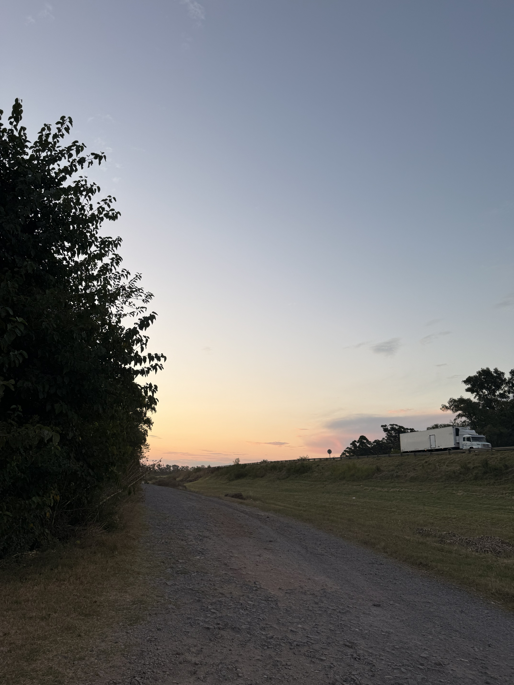

Atardecer en Escalada


Estas fotos fueron sacadas en Escalada, una localidad del partido de Zarate. Esta ubicado sobre la ruta nacional 193. Esta poblado de cinco mil habitantes y se caracteriza por la tranquilidad y paz que trasmite a quien lo visita.